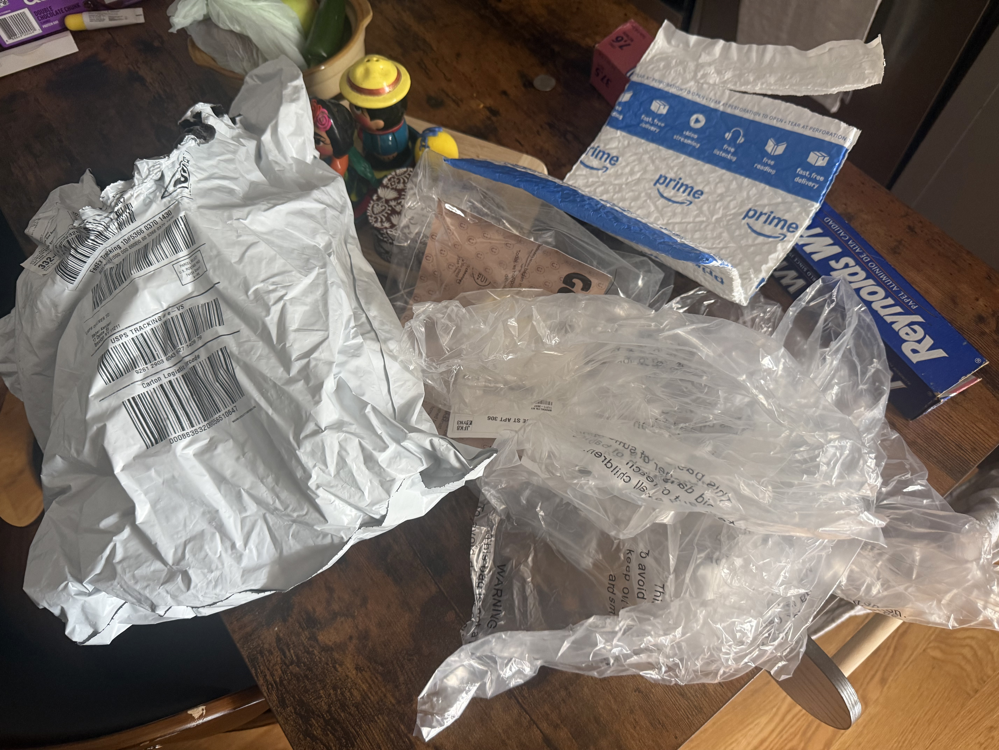
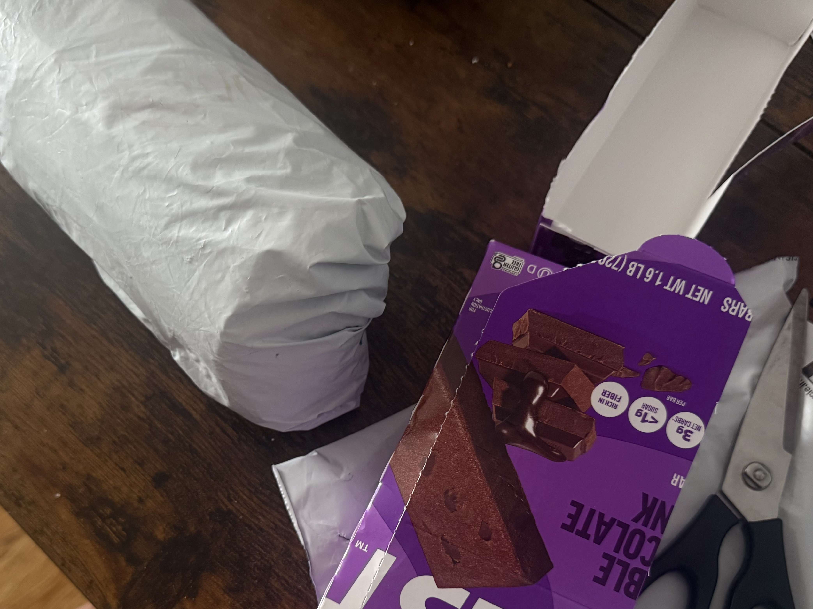
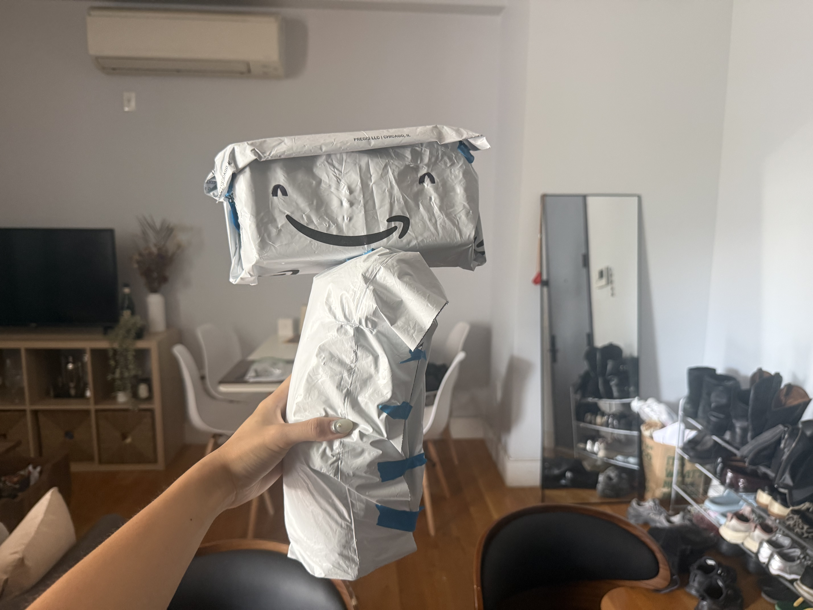
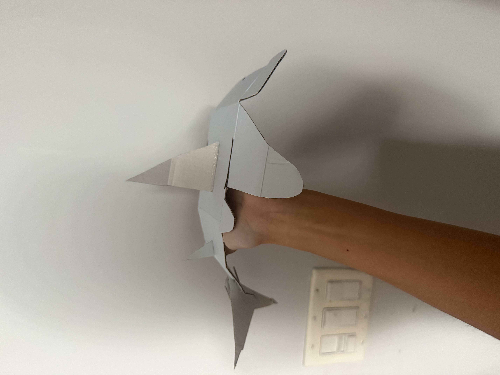
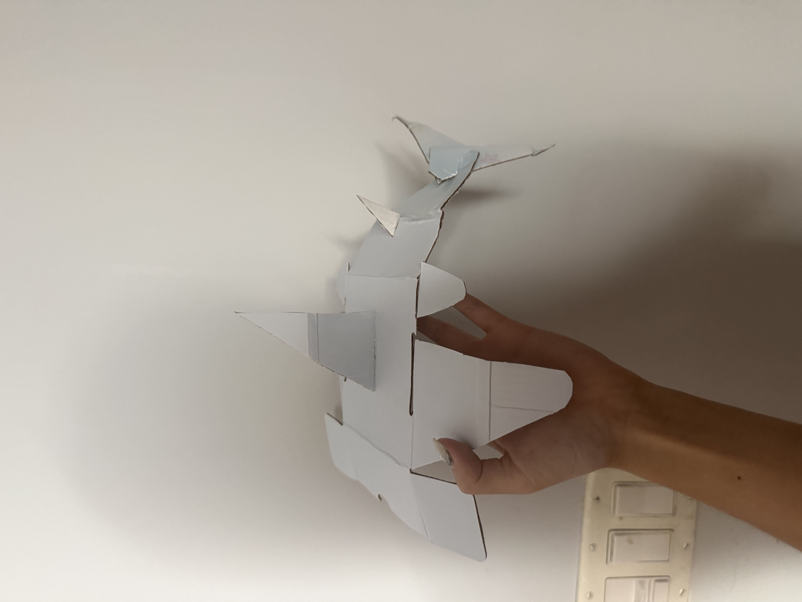
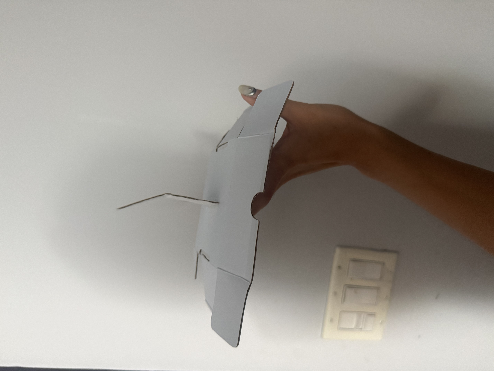

.::.
.^^~^
:^^!!. .:~!~?!:.
.^~!77. !JYY5PPP557.
:~~!7J7: ~JY55PPPPG57^
:~!7?JYYJ?7?????777777????77555PPPPPPGGGP!
.:~?JJJJJ???JJJJJJJJJJJJYY5PGGGP5PPGBBBGPPPPP7.
.:^!7?????????JJJJJJJYYY555PPGGBBBGGP5J?7!JGGP555PG5.
.... .:^!7????????JJJJYYYYY55PPGGBBBBBBBBBBBB###BG?~J55555555!
.::^::.. .. :^!7????????JJYYYY55555PPGBBBBBBBBBBBBBBBBBGGPJ!^^~7JY555555~
.:^~~~^^:. ^!~^~77?????JJJJYYYYYYYYYYY555PPPGGGGGGGGGPPPP5Y?7~: :!?JJYYY:
:^~~~~~~^:. .^~777?????JJYY5PPGGGGGPP5555555555555555YJ?7!~~:. ......
:^~~~~!!!~::^~!77?????JYYYY5PGBBBGGGPPPP5555YYYJJJJJJJJJ^
.^^~~!!!77?JJJJJYYYYYYJY5PPPPPPYJ??7!!~^^:..:^7JYYYY5Y~
:^~~~!!~!!!7????!~^^^~?JYYJJ^. .^?YYY557
.~!~^:.. .^:. .^77^ .!JJYJ!
:~~^:.. :^ ~??7:
.:::.. ^~.
SCALLOPED HAMMERHEAD
Habitat and Range
- Found in coastal warm temperate and tropical seas worldwide.
- Recorded at depths of 275 m (902 ft), and also observed close to shore, in estuarine habitats and in deep offshore waters.
- Spends most of the day closer inshore and moves offshore to hunt at night.
- Adults spend most of their time offshore and form schools segregated by sex.
- Pups reside in shallow coastal nursery areas, which makes them vulnerable to fishing pressure.
Diet and Ecological Role
- The scalloped hammerhead is a generalist predator. Off the southwest coast of Mexico, the fish Chloroscombrus orqueta was its most important prey, at 27.7% on the index of relative importance. Its trophic level of 4.1 is characteristic of a tertiary consumer.
Conservation Status
- Two distinct population segments are listed as endangered and two as threatened under the Endangered Species Act (ESA).
- The IUCN lists the species as Critically Endangered, but little management exists to protect it in international waters.
Threats
- Commercial fishing threatens the species, mainly for the shark fin trade.
- Hammerheads are readily accessible to inshore fishers as well as offshore commercial operations.
- The species' tendency to aggregate in large groups makes it easy to capture in large numbers on longlines, bottom nets and trawls. This has led to the complete die-off of populations in certain areas.
- Hammerhead fins have represented up to 5% of China's shark fin market
- The remainder of the shark is used for vitamins and fishmeal
Wildlife Conservation Society
- The WCS names unsustainable fishing, both targeted catch and bycatch, as the primary threat to sharks. Sharks grow slowly, have few young and range widely, which makes them prone to rapid population crashes.
They also mention how the problem is worsened by a lack of species-specific management, especially in low-income, ocean-dependent countries, which include many of the world's largest shark-fishing countries.
- From 2020 to 2030, the WCS is running the "10x10 initiative," with the goal of science-based management reforms in 10 key regions over 10 years. Each region works on three priorities: protecting species, managing fisheries and controlling trade.
- The work is backed by research and by building local capacity and institutions.
- WCS says the trade in shark and ray parts is worth about a billion dollars a year and was poorly regulated until recently. CITES, the international wildlife trade treaty, has listed more shark and ray species, but those listings only work if they're enforced. WCS helped produce a three-part visual identification guide for customs officials, covering dried products, whole carcasses and processed carcasses.
Materials!
- Whole Food bags are 100% recycled paper grocery bags; the grocery chain also operates styrofoam-free in all of their food packaging. In 2007, Whole Foods became the first and only food retailer in North America to introduce 100% post-consumer recycled-content paper bags. In 2024, they introduced stronger, FSC-certified paper bags at checkout, reducing the need for double bagging.
- Online shopping generates massive amounts of packaging waste, with Amazon increasing their reliance on lightweight plastic mailers. However, these can’t be recycled as easily as cardboard; they tangle up sorting machinery at recycling facilities, causing expensive delays. There are drop off locations, but even just by not removing the paper label first, when at the recycling facility, paper and adhesive contaminate the plastic film recycling, which then becomes waste.
- Another source states Amazon's plastic delivery wrappers are typically single-layer polyethylene, marked #4 (LDPE) or #2 (HDPE). Curbside programs generally don't accept them. They can go to a store drop-off program if they are clean and dry, and otherwise they end up in the garbage.
"Are Mailers Recyclable? The Complete Guide to Poly, Bubble, Kraft and Compostable Mailers." EcoPackables, www.ecopackables.com/blogs/news/can-you-recycle-bubble-mailers-heres-what-you-should-know.
Clarke, S. C., et al. "Identification of Shark Species Composition and Proportion in the Hong Kong Shark Fin Market Based on Molecular Genetics and Trade Records." Conservation Biology, vol. 20, no. 1, 2006, pp. 201–11.
Compagno, L. J. V. Sharks of the World: An Annotated and Illustrated Catalogue of the Shark Species Known to Date. Vol. 3, Carcharhiniformes, FAO, 2005.
Flores-Martínez, I. A., et al. "Diet Comparison between Silky Sharks (Carcharhinus falciformis) and Scalloped Hammerhead Sharks (Sphyrna lewini) off the South-West Coast of Mexico." Journal of the Marine Biological Association of the United Kingdom, vol. 97, no. 2, 2017, pp. 337–45. https://doi.org/10.1017/S0025315416000424.
"How to Dispose of Amazon Packaging." Napa Recycling, naparecycling.com/how-to-dispose-of-amazon-packaging/.
Maguire, J.-J., et al. The State of World Highly Migratory, Straddling and Other High Seas Fishery Resources and Associated Species. FAO Fisheries Technical Paper, FAO, 2006.
"Scalloped Hammerhead Shark." NOAA Fisheries, National Oceanic and Atmospheric Administration, www.fisheries.noaa.gov/species/scalloped-hammerhead-shark.
"Sharks, Skates, and Rays." Wildlife Conservation Society, www.wcs.org/our-work/wildlife/sharks-skates-rays.
I've always been a big fan of sharks for whatever reason. My favourite part ever about going to the zoo with my family was always getting to the aquarium section so we could
look at the sharks. I literally had a name for my favourite shark. Then last year, I forced my friends to go free-cage diving with sharks in Hawaii because it had been such a
bucket-list activity of mine, so when thinking of this assignment, sharks were naturally a species I gravitated towards.
Originally I wanted to use Whole Foods and Amazon packages, which is why I first researched those. I set out to make a model with all the packaging plastic bags I had collected
in the past week, which was quite a bit, since my roommate and I both order things online somewhat often.



I decieded to stuff most of the bags into the bigger gray bag in order to make the actual shape / volume of the shark. Then, I cut up a protein bar box I saved to use as the shape
of the head and used another Amazon package to then wrap it up. I used the logo to make the smiling shark! However, as I started putting the pieces together,
it the model was feeling flimsy, as it was just packages being taped together. I orignally wanted to use the Amazon packages because, although I hate to admit, my roommate
and I order quite a bit through there; this ranges from daily self-care prodcuts to furniture. With that being said, after reading and researching on the smaller recyling rate of these packages,
I felt like the least I could do is reuse them for this project. Although scalloped hammersharks' biggest found pollutant has been mercury in juvenile muscle tissue and there aren't
studies that link the contaminants to plastic, this still represents a material that persists in the ocean for centuries and is rarely properly recycled.
As I was looking through my recycling bin to see what could help with the shape, I grabbed a box that some new jewelry had been delivered in,
and it was a very pretty light blue with some dolphins / sea stars on it, so I thought it was perfect. As I undid the box, I realized the shape of the box already reminded
me of the composition of a shark, so without thinking about it too much, I started using that as my main material, and ended up using hinges and gorilla glue to give the shark its details.



I think it was an interesting process where I was aware of the materials I had (which was honestly a lot to choose from), researching the ones I wanted to work with, but then
when I got to the actual making of it, the model didn't manifest in the way I wanted it to. Although I do like how the final model looks, I feel like it fell short on diversity of materials,
as well as dimension. I was focused on how I enjoyed that the box already was such a quick inspiration on the shape that after I lifted it up and started taking pictures, I thought to myself
how perhaps this is too simple and 2D? My main takeaways were definitely from the reserach, though, as it was refreshing to go do research on an animal of choice. Firstly, I did not realize
how ignorant I was being with my recycling as I thought my Amazon packages could just go directly into recycling without previous work from me, but now I will try to do a better
job at removing any labels or factors that might make the chances of it being recycled even lesser. Additionally, this project made me want to investigate even beyond the points mentioned
in the assignment, and learn more about worldwide movements that help the sharks, and how any products we might consuming adds to the overfishing of hammerhead sharks.
It will be interesting to be more conscious about small actions we can do to help with both recycling as well as the overfishing of hammerhead sharks.